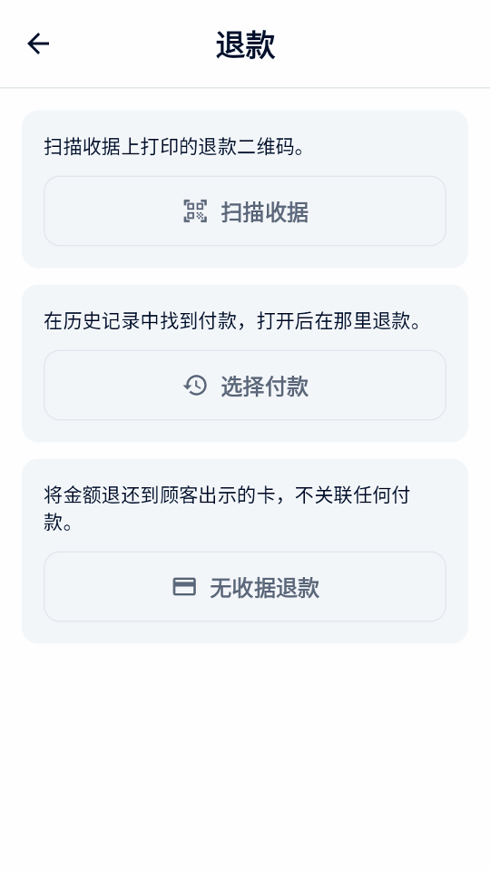
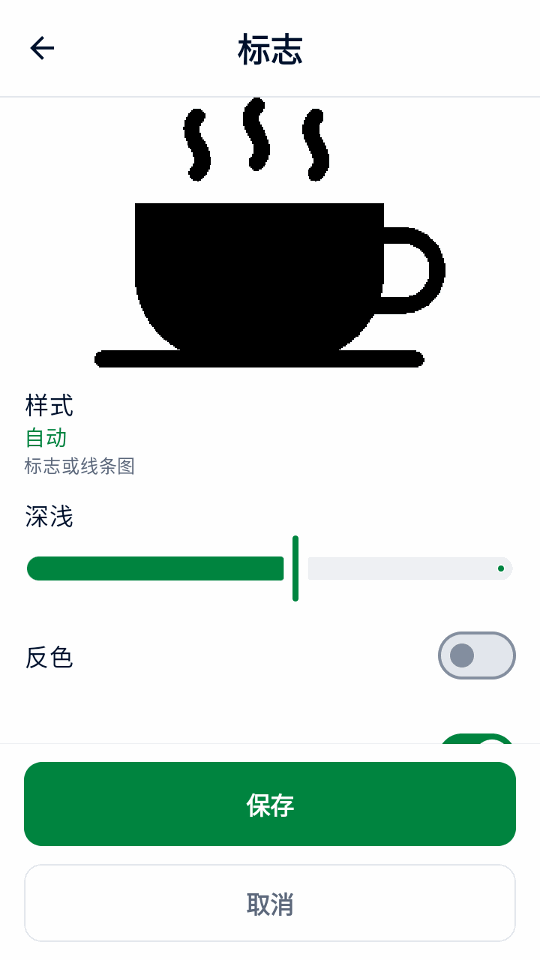
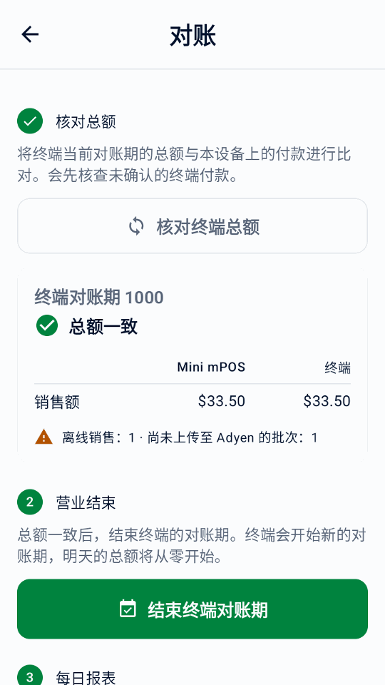
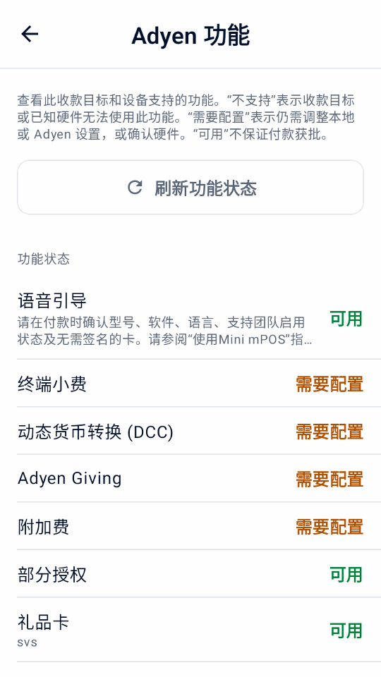
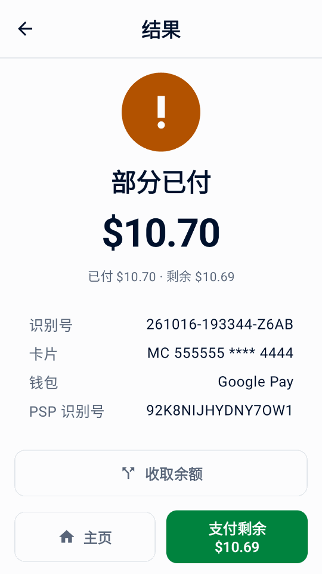
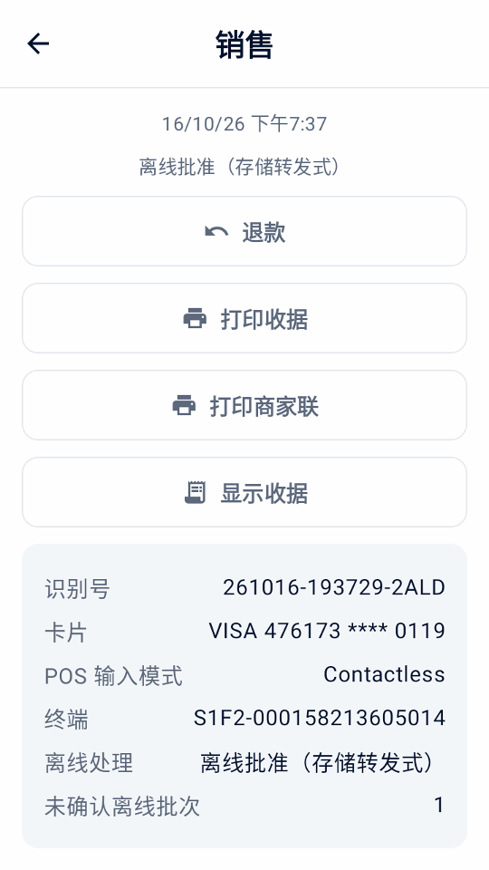
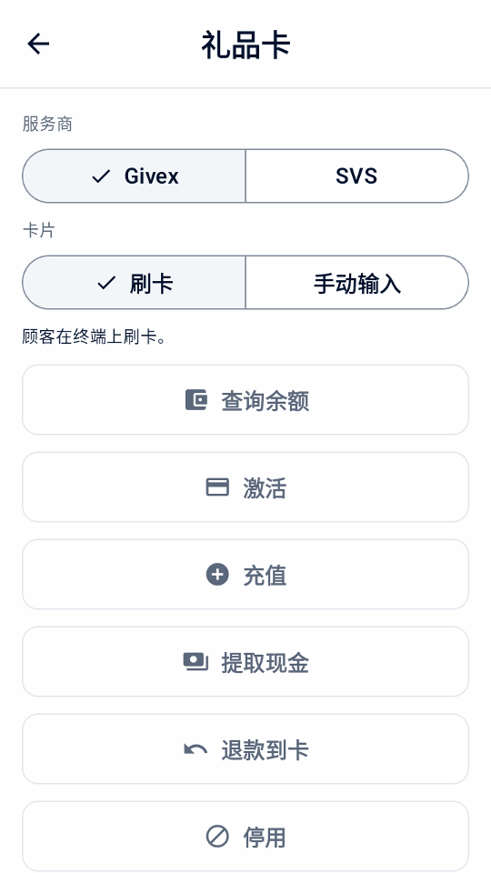
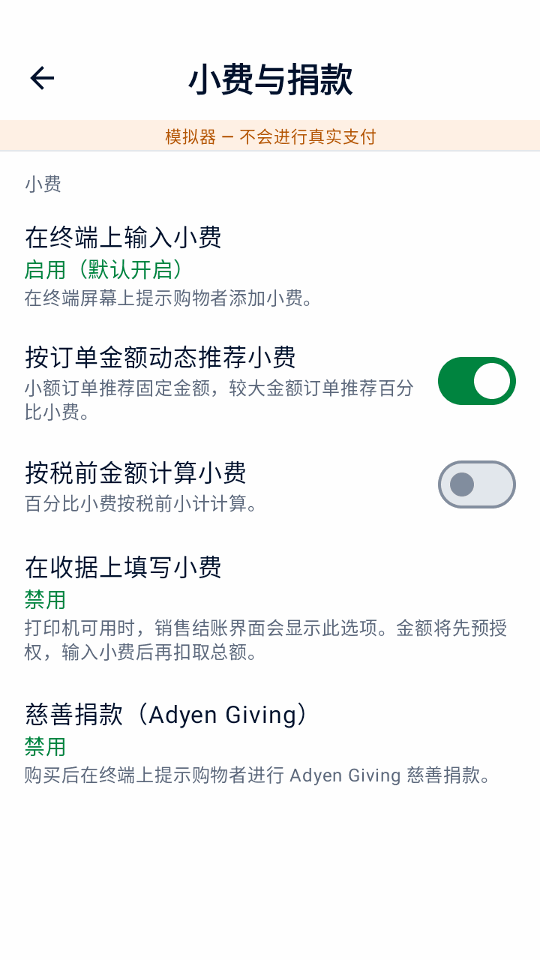

指南
使用 Mini mPOS
日常工作的分步操作：收款、退款、发送收据和每日平账。可选流程放在最后。
日常操作
准备商品、税费和员工权限
真实收款前，请完成连接 Adyen 的设置。需要支付终端或 Adyen Payments 应用。然后一次性准备商品、税费和员工权限。
设置币种和税费
- 在设置 › 支付中选择商家账户接受线下付款的币种。
- 在设置 › 税中检查税率、价格含税还是结账时加税，以及新商品的默认税率。
每个商品都有税率，不征税的商品使用 0% 税率。关闭收取税费会停止征税，但保留税率。
重要
更改币种会保留价格中的数值，不会按汇率换算。更改后请检查商品价格。
添加商品
- 打开设置 › 商品，点按 +。
- 输入名称、价格和税率。可选添加分类和条形码（输入或扫描）。
- 订金商品请开启预授权商品，使其只出现在预授权中。
设置员工 PIN
在设置 › 安全中点按设置 PIN，用管理员 PIN 保护设置和商品，并选择多久后再次锁定。 点按设置经理 PIN保护受保护的操作；管理员 PIN 无法批准这些操作。之后可使用更改管理员 PIN或 移除管理员 PIN。
在经理权限中选择哪些操作需要经理 PIN。相似的操作共用一个开关；有参考退款、无收据退款和现金退款 各有独立开关。本指南中的经理批准均遵循这些选择。
未设置管理员 PIN 时，所有操作都开放。设置管理员 PIN 后，受保护的操作会被阻止，直到设置经理 PIN。删除管理员 PIN 也会删除经理 PIN，但会保留权限选择。多次输错 PIN 会暂时锁定输入。
银行卡收款
- 在首页点按新建销售。点按商品、点按扫描条码，或添加自定义商品。
- 点按收款。核对商品、税费和合计，并填写识别号或电子邮件字段。
- 点按支付。终端（或 Tap to Pay 的 Adyen Payments 应用）会提示购物者付款。
- 等待结果。结果显示前请勿开始另一笔付款。
- 通过打印收据、发送电子收据或分享收据向购物者提供收据（已自动发送时除外）。
说明
根据终端和商户账户，顾客可以插卡或挥卡，也可以用手机或手表感应支付。使用 Tap to Pay 时，Adyen Payments 应用会引导顾客。
警告
结果未知不表示付款失败。再次收款前，请查询原付款。
顾客参考号和保存卡片均为可选；请参阅参考号和已保存的卡片。如需分单或收取现金、 礼品卡或餐券，请参阅可选结账流程。如需让顾客在自己的手机上付款，请使用 付款链接。如果付款被拒绝，请参阅被拒绝的付款。
退款或撤销付款
- 退款
- 适用于已扣款的付款，退还全部或部分金额。
- 撤销（取消）
- 适用于尚未扣款的冻结付款：订金点按取消预授权，待填写小费 的销售点按取消支付。这会释放冻结金额。
退款步骤：
- 在首页点按退款，然后点按扫描收据扫描收据上的退款二维码，或点按选择付款在交易记录中打开原销售。
- 选择全额、指定金额或按商品退款。按商品退款要求本设备保留原销售。
- 确认退款，如有提示则输入经理 PIN。


这些退款关联原付款。已支付的付款链接请在商户后台退款。
拆分的销售会退回到原来的各笔付款。Mini mPOS 会建议每张卡退回多少、需要退还多少现金；点按某笔付款 即可调整。系统先逐张退回银行卡，再退现金，退现金需要经理 PIN。如果某张卡的退款未被接受，则不会继续退款； 请打开该销售查看剩余金额。
对于已报告附加费的销售，退款依次退回购买金额、小费和附加费；全额退款 包含剩余的附加费。
无收据退款
仅在没有可退款的付款时（例如无收据退货）才使用无收据退款。它会把金额退到购物者出示的卡上， 且不关联任何付款，因此 Mini mPOS 无法核实实际付款。错误或重复退款由您承担责任。
请 Adyen 为门店启用无参考退款，并在商户后台设置 Adyen 的退款上限。然后在“设置”›“支付”中开启 允许无收据退款，设置您自己的退款上限和经理 PIN。Adyen 在部分国家/地区以及 扫码钱包上不允许此类退款；Mini mPOS 会检查 Adyen 为终端验证的门店。
点按无收据退款，输入金额，选择原因，确认并用经理 PIN 批准；然后由购物者出示卡片。 退款已批准表示收单机构已立即批准；已请求退款表示 Adyen 已收到请求。交易记录、 收据和每日报告会单独列出这些退款；请手动对账。
如果 Adyen 支持团队设置了退款延迟，请开启已设置退款延迟。在延迟期间打开该退款并点按 取消退款，然后在商户后台查看退款是否已停止。
Adyen: Unreferenced refunds · Adyen: Cancel an unreferenced refund
重要
已请求退款表示 Adyen 已收到请求，不表示购物者已收到款项。请在商户后台确认最终结果。退款结果未知时， 重试前请先查询。
打印、发送电子收据或分享收据
在付款结果或交易记录中点按打印收据或发送电子收据。平板和手机还可点按分享收据，通过 Android 分享菜单发送图片。打印需要配有打印机的终端。
自定义并测试收据
- 在设置 › 收据中填写商家信息、抬头和页脚。也可点按从 Adyen 导入商家信息，查看 Adyen 提供的信息。选择 补全缺失信息保留现有文字，或选择替换现有信息使用获取的商家名称、地址和电话。导入的空白字段保留原值，税号、标题和页脚不变。
- 选择自动打印、何时打印商家联，以及是否显示退款二维码。
- 点按打印测试收据并检查打印效果。屏幕预览无法显示打印机的确切排版。
其他选项：
- 显示税额
- 显示总额中包含或另行加收的税额，不改变实际收取的税额。
- 显示税额明细
- 按税率列出税额。价格含税时，显示所含税额需要开启此项。
- 按税率显示应税金额
- 按税率汇总商品金额，包括 0%。
- 显示识别号
- 默认开启。打印商家识别号及已输入的购物者识别号，便于将收据与付款对应。
- 标记的税率（%）
- 用商品标记及其说明标出该税率的商品。留空则不标记。
- 每行字符宽度
- 默认为 32，适用于较窄的收据纸卷。请通过测试打印选择适合打印机的宽度。
在设置 › 收据 › 标志中选择 PNG、JPEG 或 WebP 图片。如果设备没有文件选择器，可通过 设置助手单独发送标志，或与其他设置一起发送。查看黑白预览：样式可选 自动、标志或照片，并可用深浅、反色和裁剪边距微调。选择大或小的大小后保存。如果标志已包含 商户名称，请关闭打印商户名称。
标志会显示在打印、电子邮件和分享的收据上，包括重新打印的收据。如需调整，请重新选择原始图片；使用“移除标志” 可将其清除。


设置语言
应用支持英语、简体中文、繁体中文、日语、巴西葡萄牙语、西班牙语和法语。设置 › 语言会立即 更改本设备上的应用文字和收据标签；已保存的商家文字和商品名称保持不变。跟随设备使用 Android 为应用 设置的语言。Adyen 的银行卡收据行遵循终端的收据语言。
设置电子收据
- 打开设置 › 电子收据。选择服务商，或填写 SMTP 服务器、端口、发件人和登录信息。使用 STARTTLS 或 SSL/TLS。
- 发送测试邮件。
- 在同一屏幕上选择何时询问购物者电子邮件，以及是否自动发送收据。
请按服务商说明开通 SMTP 并获取正确的密码：
收据无法打印或发送时，请参阅打印机和邮件问题。
查询付款并完成每日平账
交易记录按日列出付款和退款，并显示每日合计。
每页最多显示七个自然日内的 100 条记录；使用上一步和下一步翻页。搜索范围 涵盖所有保留的交易。
- 按销售、待填写小费、预授权、退款或需处理筛选，并用付款方式筛选卡品牌或钱包。
- 可按识别号、授权码、购物者识别号或电子邮件、卡号后四位、品牌、钱包或确切金额搜索。每个词都需匹配：
visa 34可查找金额为 34 的 Visa 付款。
屏幕上的合计受搜索和筛选影响。冻结的付款（如订金和收据小费）在扣款被受理当日计入销售。
每日平账
- 打开交易记录，筛选需处理并逐一处理；参见结果未知。
- 检查待填写小费和预授权筛选。录入小费，并在冻结到期前为订金扣款或取消。
- 点按日期旁的打印图标，打印本地每日汇总。
- 与商户后台中的 Adyen 报告对账；参见 Adyen 结算对账指南 。
汇总忽略筛选，涵盖整日的销售、已含小费、已受理退款、净额、新增冻结和未解决操作，按币种分列。TEST 和模拟器活动会标明。已支付的付款链接和日期未知的扣款会作为无日期活动单独列出。
重要
本地每日汇总只包含本设备保存的付款，不是 Adyen 的最终结算，也不包含其他设备。以商户后台为准。
警告
在 LIVE、TEST 和模拟器之间切换会永久删除本设备上的所有交易记录和报告数据。存在未完成付款时，应用会再次警告：Adyen 上的任何操作都不会被取消，但本地恢复和安全重试数据将丢失。商品和设置保留。
核对终端总额并结束周期
- 在主页点按对账，然后点按核对终端总额。Mini mPOS 会先核查待处理或结果未知的终端付款，然后并排显示 Mini mPOS 与终端的销售额和退款。
- 如果显示总额不一致 ，请在交易记录中处理需要关注的付款后再次核对。终端对账期不一定等于一个自然日；其他设备使用同一终端或本地记录缺失都可能导致差异。付款链接、令牌扣款和示例记录不属于终端付款。
- 营业结束时，点按结束终端对账期并确认，在要求时完成经理批准。终端会结束当前对账期并开始新的对账期；此操作无法撤销。
- 如有需要，点按打印今日报表打印本地每日汇总。
Tap to Pay 不支持此功能。总额一致或周期已结束并不代表已结算、退款已完成或离线交易已上传；最终结果以商户后台 为准。


可选流程
检查并配置 Adyen 功能
连接收款目标后，打开设置 › Adyen 功能。页面将功能标为可用、需要配置或此收款目标不支持。这些只是设置状态，不代表商家账户、银行卡或付款方式一定能完成交易。完成收款设置前，此页面会显示完成收款设置。
- 点按刷新功能状态，读取所选终端的设置。检查真实终端需要快速入门中列出的 Management API 角色 。
- 对于支持的终端，可配置付款币种的终端小费、DCC、MOTO 或离线限额，然后点按保存到 Adyen。 这会更改 Adyen 中的终端设置。
- 在设置的支付、小费与捐款或购物者端终端屏幕中启用所需的结账 选项，然后在 TEST 环境中测试。该页面还会列出 Adyen Giving、部分授权、附加费、礼品卡、终端对账和购物者屏幕， 但不提供编辑。
Tap to Pay 不提供终端小费、购物者屏幕、MOTO/MKE、离线付款或终端对账等实体终端功能。账户启用和支付方式要求请参阅 Adyen 线下支付文档。


使用可选结账流程
只在设置中启用需要的结账选项。除部分授权、拆分和附加费外，这些流程都需要支持的实体终端，Tap to Pay 不可用。 请先查看Adyen 功能并用实际配置测试。大多数选项不能在同一笔付款中同时使用； 出现冲突时，结账页面会说明并要求您关闭其中一项。
使用语音引导付款
结账时为该购物者开启语音引导。AMS1、S1F2、S1F2L、S1E2L 和 S1U2 需要软件 1.117 或更高版本， M450、P630 和 SFO1 需要 1.124 或更高版本。Adyen 支持团队必须为该终端启用此功能。请参阅 Adyen 无障碍付款要求。
关闭小费、Giving 和手动输入，确认软件和启用状态后选择确认无障碍设置。请使用无需签名的卡，终端 语言不能为爱沙尼亚语、拉脱维亚语、冰岛语或立陶宛语。此次付款将请求全额，并跳过购物者屏幕提示。
终端会朗读付款说明，请给购物者留足时间。Mini mPOS 最多等待十分钟获取结果。如果未收到响应，请在再次付款前 查询结果不明的交易。每次尝试后此选项都会重置。
附加费
附加费由 Adyen 按您在 Adyen 中的配置添加；Mini mPOS 不设置附加费。Adyen 报告附加费时，交易记录、收据和每日报告 会将其与购买金额和小费分开显示；扣款总额已包含附加费。未报告的附加费保留为未知。如果部分授权未报告附加费， 请先查看商户后台或退款到原卡，再重新开始。
请在付款前告知附加费，尤其是使用 Tap to Pay 时，因为它没有附加费确认页面。不要将附加费与 DCC 同时使用。已报告 附加费时，Mini mPOS 会阻止超出原预授权金额的调整和请款。请参阅 Adyen 附加费要求和 Adyen 附加费配置。
墨西哥信用卡分期付款
与 Adyen 确认发卡机构计划和费用后，在“设置”›“支付”中启用分期付款，并刷新 Adyen 功能以验证墨西哥门店。结账时 选择借记、一次性信用卡付款，或 3、6、9、12、18 期月付，并用一张符合条件的卡支付整笔销售。付款链接、令牌、 扫码钱包和礼品卡不会带上分期计划。
详情、交易记录和收据会显示请求的计划和返回的计划。不支持的发卡机构可能会拒绝。请按金额或全额退款原付款； 分期安排由发卡机构管理。
收取部分授权后的剩余金额
开启允许部分授权后，可接受低于请求金额的银行卡批准。结果显示部分已付时，请核对 已付和剩余金额，点按支付剩余，并用另一张卡收取余额。各次尝试都记录在同一笔销售中。不要按总额 新建销售：已批准的部分已经付款。
未收到响应不等于部分授权。请先处理结果不明的交易，再继续收款。


拆分销售或收取现金
结账时点按拆分或现金支付。选择金额、均分或本次付款涵盖的 商品，然后点按刷卡或现金。价格和税费保持原样，多出的零头计入 前几份。收取现金时，输入购物者给的金额，找回显示的零钱后确认。现金只记录在本设备上。
在全部付清之前，该销售保持部分已付。在结果页面或交易记录中点按 收取余额即可继续，重启后也可以。继续收款前，请先处理结果不明的银行卡付款。收据会列出每笔付款； 每日报告单独显示现金，终端总额从不包含现金。
设置礼品卡后，点按礼品卡即可用礼品卡支付所选金额；余额不足时会部分批准。礼品卡付款会退回到该卡， 本地礼品卡除外，需在 Mini mPOS 之外退款。


拆分销售的简体中文模拟器演示。
购物取现
Adyen 确认您的门店和卡计划后，在“设置”›“支付”中开启购物取现，设置现金限额和经理 PIN。结账时输入顾客 要求的额外现金，并用一张符合条件的卡支付整笔销售。购买可能获批而取现被拒；只交付已批准的现金。
取现
首页的取现可在不购买的情况下申请现金。Adyen 为门店确认澳大利亚 eftpos 取现后，单独启用此功能。
批准后，核对批准的现金和银行卡扣款。只交付已批准的现金，然后点按记录现金已交付并用经理 PIN 批准。金额未报告时切勿交付现金；结果不明时请先查询，不要再次申请现金。交易记录会保留未记录的交付；每日报告 将批准和已交付的现金与销售分开显示。退款从不退回已支出的现金。
接受餐券
请在签署发卡机构合同、登记门店并由 Adyen 启用餐券后，再在“设置”›“支付”中开启餐券。适用的餐券 由终端已验证的门店国家/地区决定：巴西 PAT 餐券；比利时、芬兰、德国、卢森堡和西班牙的 Mastercard 或 Visa 餐券；或法国的 Titres-restaurant。设置后请刷新 Adyen 功能。不提供 Monizze、比利时 Pluxee 和 Lunch Check。
如果餐券要求符合条件的商品，请在“设置”›“商品”中打开每个商品并开启可用餐券支付；自定义商品 始终不符合条件。结账时点按拆分或现金支付，再点按餐券。Mini mPOS 会给出餐券 最多可支付的金额；其余部分用银行卡或现金收取。Mastercard 或 Visa 餐券可能被部分批准。Titres-restaurant 每天最多 EUR 25，周日和公共假日不可用，且不能退款：请改为提供店内抵用金。余额不足的巴西餐券会被拒绝； 请输入较低的金额。
在巴西，开启在应用中选择巴西餐券即可从 Mini mPOS 发起餐券付款。如果 Adyen 支持团队已启用终端 自带的信用卡、借记卡或餐券选择界面，请保持关闭；此时按银行卡收款，由购物者在终端上选择。餐券退货只退回原 餐券，绝不以现金退还。
使用购物者端终端屏幕
使用独立的网络或云终端时，打开设置 › 购物者端终端屏幕。可选择在付款前显示商品明细、请购物者确认订单，或在结账未填写电子邮件时收集电子邮件。收集电子邮件需要先设置 电子收据；开启自动发送电子收据后，收据会自动发送。批准后可显示二维码并邀请购物者进行 0–10 评分；终端返回的评分显示在交易详情中。
这些提示使用应用语言。Mini mPOS 在支付终端本机运行时不提供这些提示。二维码包含商户参考号，而不是收据； 仍请交付收据。
邀请慈善捐款
与 Adyen 安排开通 Adyen Giving 后，在设置 › 小费与捐款中启用慈善捐款（Adyen Giving） 。销售结账时选择它，在付款后通过终端邀请捐款。预授权和收据小费冻结付款不提供此选项。
购买和捐款是两笔独立交易。终端报告的捐款金额显示在交易详情中；购买获批本身不代表捐款已确认。
接受 MOTO 或手动键入卡号付款
- 向 Adyen 确认终端和账户允许所需输入方式。必要时在 Adyen 功能中配置 MOTO，并按员工 PIN 说明设置权限。
- 在设置 › 支付中启用 MOTO 或手动键入卡号选项。结账时，远程订单选择邮购/电话订购（MOTO）；芯片或非接触读取失败时选择 手动键入卡号（MKE）。两者只能选一个。
- 点按支付，查看欺诈和拒付责任警告，并在提示时完成经理批准。
手动输入的交易会让商户承担更高的欺诈和拒付责任。
识别离线付款和待确认批次
离线 EMV 和存储转发式（Store-and-Forward）支付需要通过本地连接访问支持的终端：Mini mPOS 运行在该终端上，或连接同一网络中的终端。云路由和 Tap to Pay 不提供此功能。请先与 Adyen 安排离线处理并评估风险，再在 Adyen 功能中设置限额。Mini mPOS 本身不会排队保存付款，也不能在本地网络中断时恢复终端连接。
交易记录会标记终端报告的离线销售。打开销售可查看离线处理、使用的是离线 EMV 还是存储转发式，以及终端报告的未确认离线批次。离线批准可能暂时没有 PSP 识别号。它不是未知结果，但也不代表 Adyen 已收到或结算该付款。
恢复终端与 Adyen 的连接后，在商户后台核对上传的付款和最终结果。进行终端对账 时检查离线和未确认批次警告；总额一致不代表离线付款已结算。若未收到明确付款答复，请遵循未知结果恢复步骤，不要自行认定已离线批准或再次收款。


扫描购物者的钱包付款码
在销售结账时使用扫描钱包读取购物者钱包应用中的付款码。这与扫描商品条码或退款收据不同。此功能需要实体支付终端，不适用于 Tap to Pay； 钱包查询需要只读权限。
- 核对合计和结账字段后点按扫描钱包。若已选择收据小费，请确认不使用该选项：钱包会立即收取合计，而不是进行预授权。
- 选择购物者的钱包。只有一个可用钱包时会自动选择。仅显示单独配置的钱包；Alipay+ 不代表 GCash、DANA、Kakao Pay 或 TrueMoney 已分别启用。
- 终端确认配备内置扫描器时，按下该终端的扫描按钮。它可能是网络或云端终端，而非运行 Mini mPOS 的设备。要改用设备摄像头，请点按使用摄像头。
- 扫描购物者的付款二维码或付款条码。一个有效扫描会立即开始支付。等待普通支付结果并提供收据。
取消后购物车会保留。终端扫码 30 秒后结束；请使用重新扫描或摄像头。部分钱包可能不支持 保存卡片；即使未保存令牌，已批准的付款仍然有效。处理钱包 问题，切勿通过重新扫描来替代结果不明的付款。
请使用 Adyen 钱包指南 和 Adyen PayPal 和 Venmo 指南核对钱包开通情况和 TEST 行为。


钱包扫描的简体中文模拟器演示。
使用识别号并保存卡片
- 商家交易识别号
- 如需记录预订或订单号，请开启设置 › 支付 › 要求输入商家交易识别号。此号码用于在 Adyen 中识别付款。留空时会生成唯一识别号。
- 购物者识别号
- 在设置 › 支付中选择购物者识别号：结账时输入的购物者识别号（默认）、购物者电子邮件或无。它会随每笔付款发送给 Adyen。电子邮件识别号默认经过哈希处理；所有设备请使用相同的盐值。
- 保存卡片
- 设置购物者识别号后，开启提供保存卡片选项，并选择适合您 Adyen 配置的循环扣款模式。勾选 保存卡片以供今后支付前须取得购物者同意。之后如需扣款，请参见管理令牌。
管理令牌
- 在主页点按令牌，如有要求请输入经理 PIN。
- 输入购物者识别号（或用作识别号的电子邮件地址），然后点按查找令牌。
- 点按令牌旁的扣款，然后添加商品或自定义商品。此购物车与新建销售的购物车相互独立。
- 核对扣款信息后点按扣款。
顾客不在场，请先征得其同意。以不同循环扣款模式保存的令牌无法在此扣款。请从 交易记录中退款这些付款。如果扣款结果不明，七天内可在交易记录中查询，之后请在商户后台查询。 在新建销售的结账页面，当购物者识别号有已保存的令牌时，会出现令牌扣款。
要删除令牌，请点按其删除操作，核对详情，然后确认并用经理 PIN 批准。删除会在 Adyen 中移除该令牌， Mini mPOS 和其他集成都将无法使用；此操作无法撤销。过往付款及其退款仍可使用。如果删除仍未确认，请在再次扣款或 删除前点按检查删除结果。
销售和管理礼品卡
礼品卡需配合 Adyen 终端使用；Tap to Pay 不支持礼品卡。在设置 › 支付 › 礼品卡中， 开启您已在 Adyen 完成接入的每个服务商；对于 Intersolve 或本地礼品卡，添加 Adyen 提供的卡类型； 并选择员工出示卡片的方式：用相机扫描并输入有效期，或在终端上刷卡或手动输入。只提供 Adyen 为该服务商说明的操作： 停用仅限 Givex，本地礼品卡仅支持付款。
- 在主页点击礼品卡，然后选择服务商和出示卡片的方式。
- 选择查询余额、激活、充值、 提取现金、退款到卡或停用。
- 充入金额时，选择刷卡付款，或选择在应用外收款并确认已收到款项。
- 确认后，使用经理PIN批准。


余额查询和金额更改的批准遵循员工权限。先完成刷卡付款，付款获批后才发送金额； 如果付款结果未知，请先查询。如果已收款但金额未充入，活动会显示金额未充入： 请重新发送金额、退还刷卡付款，或记录已退还的款项。不会自动重复任何操作。
撤销充值仅对该卡 24 小时内的最近一次充值显示。提现通常支付全部余额并停用此卡； 只有部分 Givex 卡允许部分提现。获批后交付现金，然后点击现金已交付； 未确认的交付即使重启后也会保留在需要处理中。礼品卡活动显示在交易记录中， 并在每日报告中单独列出；从不计入销售。
通过链接收款
前提条件
- LIVE 使用前，商家账户已满足 Adyen Pay by Link 要求 ，包括条款和条件
- 在销售结账时点按创建付款链接。
- 展示二维码，或点按通过邮件发送链接、打印链接，在平板或手机上还可点按分享链接。
- 保持链接界面打开以查看到账，或稍后在交易记录中点按查询支付状态。
- 不再需要链接时，点按取消链接。
链接被支付、过期或取消前，记录显示待支付。在设置 › 支付 › 付款链接中设置链接有效时长。链接仅用于销售，不用于订金或收据小费。
重要
有效期内任何持有真实链接的人均可付款。已支付的链接请在商户后台 › Payments › Payment list中退款，应用无法为其退款。
链接未显示或不更新时，请参阅付款链接问题。
冻结并收取订金
前提条件
- Adyen 支持团队已为您的付款方式开通预授权；参见 Adyen 预授权指南
预授权在卡上冻结金额，不立即扣款。无需将整个账户改为手动扣款：Mini mPOS 仅对此类付款请求手动扣款。
- 在首页点按新建预授权。选择预授权商品、扫描其条形码或输入金额。每笔预授权包含一个商品。
- 结账时点按预授权。收据会显示冻结金额。
- 准备好后，在交易记录中打开该记录并选择操作：
- 扣款
- 收取应付金额。较少金额会释放剩余部分；较多金额会先请求发卡行增加冻结金额。请求扣款后即可退款。
- 调整金额
- 更改冻结金额，不扣款。提交相同金额会续期授权。
- 取消预授权
- 释放冻结金额。如果已在商户后台扣款，Adyen 会改为全额退款。
已请求扣款不是最终确认，请检查商户后台。如需立即获得金额调整结果，请按 Adyen 授权调整指南启用 Return adjust authorisation data。
警告
冻结金额会到期。请每天检查预授权筛选，并及时扣款或取消。操作失败或结果未知时，请参阅扣款问题。
在终端上收取小费
- 在 Adyen 功能中检查终端小费。必要时为付款币种设置预设和自定义小费选项。
- 在设置 › 小费与捐款中启用在终端上输入小费并选择结账默认状态。可选开启按订单金额动态推荐小费 ，对小额订单推荐固定金额、较大订单推荐百分比，或开启按税前金额计算小费。
- 销售结账时选择在终端上输入小费，点按支付。购物者在卡片扣款前选择小费。核对返回的总额和小费并提供收据。
此流程不需要打印机，也无需稍后录入小费。终端小费和收据小费不能同时选择。两者均不用于预授权、扫码钱包付款或付款链接；Tap to Pay 不提供终端小费。


收取购物者在收据上填写的小费
前提条件
- 配有打印机的终端
- Adyen 支持团队已开通预授权和超额扣款（overcapture）；参见 Adyen 收据小费指南
在设置 › 小费与捐款中选择启用（默认关闭）或启用（默认开启），决定结账开关的初始状态。默认的 禁用会隐藏该开关。部分借记卡和钱包不支持此流程。
- 在销售结账时开启在收据上填写小费，点按支付。账单金额只冻结，不扣款。
- 打印收据。收据有空白的小费和合计栏，商家联有签名栏。
- 购物者填写后，在结果界面或交易记录的待填写小费筛选中点按输入小费。
- 输入小费或合计，或点按无小费，然后确认。
应用会扣款账单加小费的总额。超过 20% 的小费需要发卡行先增加冻结金额；若被拒绝，请输入较少的小费或不加小费。小费保存后不能更改。录入小费前应取消付款而不是退款；录入后的退款包括小费。
警告
请及时录入每笔小费（包括零小费），以便在冻结到期前完成扣款。扣款失败或结果未知时，请参阅扣款问题。
设置更多设备并管理数据
- 在已配置的设备上打开设置 › 数据与传输 › 共享至另一台设备。选择商品目录、设置和／或密码与密钥，然后点按显示二维码。
- 在新设备上选择从另一台设备设置，按任意顺序扫描所有二维码。选择合并或替换其商品目录。
- 输入第一台设备显示的 12 位传输码，即使只复制商品或设置也需要。请将传输码与二维码分开保管。点按导入。
- 检查价格和税费，在设置 › 终端中测试连接，并打印测试收据。
新设备保留自己的支付目标、终端、环境和 Tap to Pay 注册。只有 Adyen 为另一台终端分配了相同密钥时，共享密钥才可用于该终端。
重要
这是一次性复制，不是同步，也不是交易记录备份。各设备保留各自的付款。在 Android 中清除应用数据会删除设备上的全部商品、设置和交易记录。
在设置 › 数据与传输中设置交易保留时长或点按清除已完成的交易记录；未解决的付款始终保留。
在平板或手机上，Mini mPOS 会在启动时检查新版本。如果首页显示更新，点按后会在浏览器中打开 APK，再安装下载的文件。Adyen 终端通过商户后台更新，不会显示此提示。您也可以获取最新发布版本并按 安装步骤操作。保持相同签名来源，直接覆盖安装；不要卸载应用或清除数据。
导入问题请参阅 PIN 和传输问题。